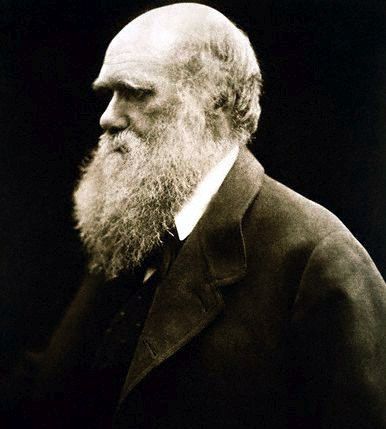
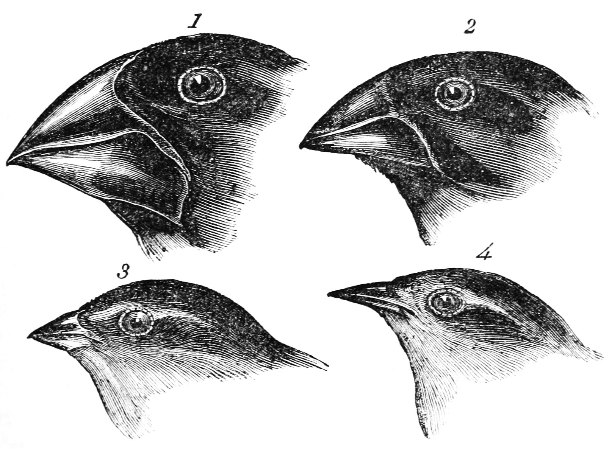

Evolutionary Algorithms 101
Basics and Applications
Manuel Ernst

- from Erlangen, Bavaria Franconia
- Software Engineer @ Methodpark
- @seriousManual on Github & Twitter
Evolution?


https://de.wikipedia.org/wiki/Charles_Darwinhttps://en.wikipedia.org/wiki/Darwin%27s_finches
Circleworld


Terms: Population

Terms: Recombination

Terms: Mutation

Terms: Selection

Terms: Fitness

Algorithm
Create Population While True Choose Parents Combinate Parents (Recombination) Mutate Offspring (Mutation) Rate Offspring (Fitness) Add Offspring to Population Remove Unfittest Individual (Selection) If Termination Criterion Is Met: End Loop Next
Circles
source: http://blog.eagerbug.com/circles/Circles: Definition
- Given: Some circles on na arbitrary playground
-
Task: Find an additional circle
- ...that does not cross the playground border,
- ...that does not cross another circle
- ...that has a maximum circular area.


Circles: Trivial
Circles: Approach
Genes
{
x: <int>,
y: <int>,
radius: <int>
}
Initial Population
Arbitrary circles (x- and y-coordinate, radius)
Circles: Approach
Fitness
- Crossing the playground border? (Penalty)
- Crossing another circle? (Penalty)
- How big is the circle? (Bonus)
Circles: Approach
Fitness
var overlapping = number of overlapping circles var outside = crossings with the playground border var area = area of the circle var fitness = area if outside > 0 or overlapping > 0 fitness = fitness * -1 if overlapping > 0 fitness = fitness * 2 * overlapping; if outside > 0 fitness = fitness * 4 * outside;
Circles: Approach
Recombination
Parents:
{x: 100, y: 10, radius: 7}
{x: 331, y: 77, radius: 50}
{x: 100, y: 10, radius: 7}
{x: 331, y: 77, radius: 50}
Child:
{x: 100, y: 77, radius: 50}
{x: 100, y: 77, radius: 50}
Mutation
{x: 103, y: 77, radius: 49}Circles: Implementation
Characteristics
https://de.wikipedia.org/wiki/Vitruvianischer_Menschcharacteristics
The chosen approach is always uniquecharacteristics
The choosen approach is not always the optimal onecharacteristics
The solution is not deterministiccharacteristics
Extreme conditionscharacteristics
Mutation Ratecharacteristics
The initial population size does matterTravelling Salesman Problem
http://business-coaching-ulm24.de/seminare/burnoutberaterin.htmlTravelling Salesman


TSP: Trivial
13 cities: (n - 1)! / 2 combinations-> 239500800 possible solutions, @ 10k tests every second: 6.6h
Travelling Salesman
Genes
1 -> 2 -> 3 -> 4 -> 5 -> 1
Initial Population
Arbitrary combinations of all cities on the map
Travelling Salesman
Recombination
Parents:
5 -> 3 -> 1 -> 4 -> 2 -> 5
2 -> 4 -> 5 -> 3 -> 1 -> 2
5 -> 3 -> 1 -> 4 -> 2 -> 5
2 -> 4 -> 5 -> 3 -> 1 -> 2
Child:
5 -> 4 -> 1 -> 3 -> 2 -> 5
5 -> 4 -> 1 -> 3 -> 2 -> 5
Mutation
5 -> 4 -> 1 -> 2 -> 3 -> 5Travelling Salesman
Fitness
The complete length of a way
Travelling Salesman
Travelling Salesman
- 18 cities
- 1.79e+14 possible solutions
- @ 10k tests every second: 563years
Thank you!
Questions?
- Twitter (@seriousManual)
- Github (github.com/seriousManual/evolution)
-
ernestly.com/evolution
- Slides
- Implementations